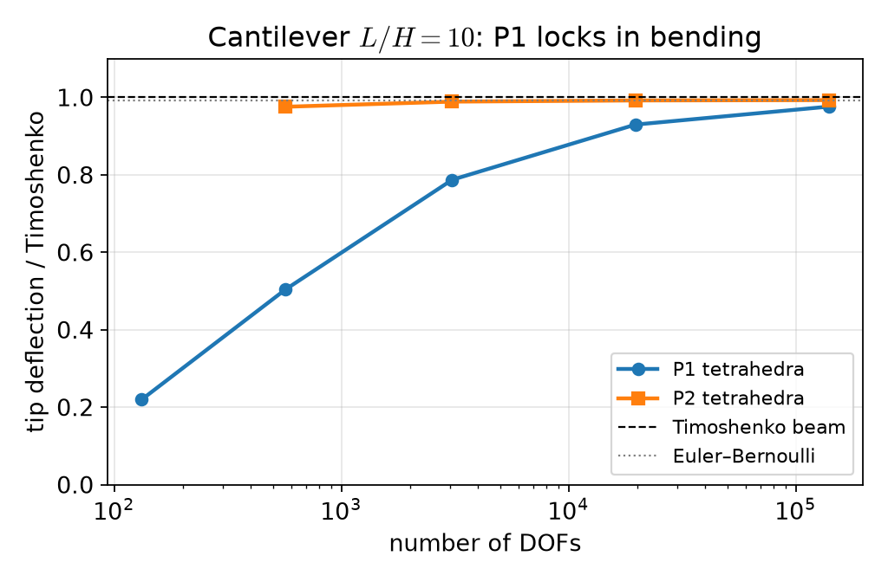
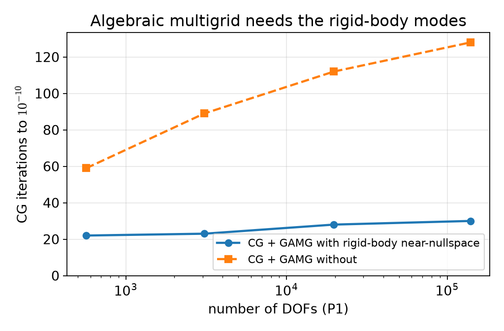
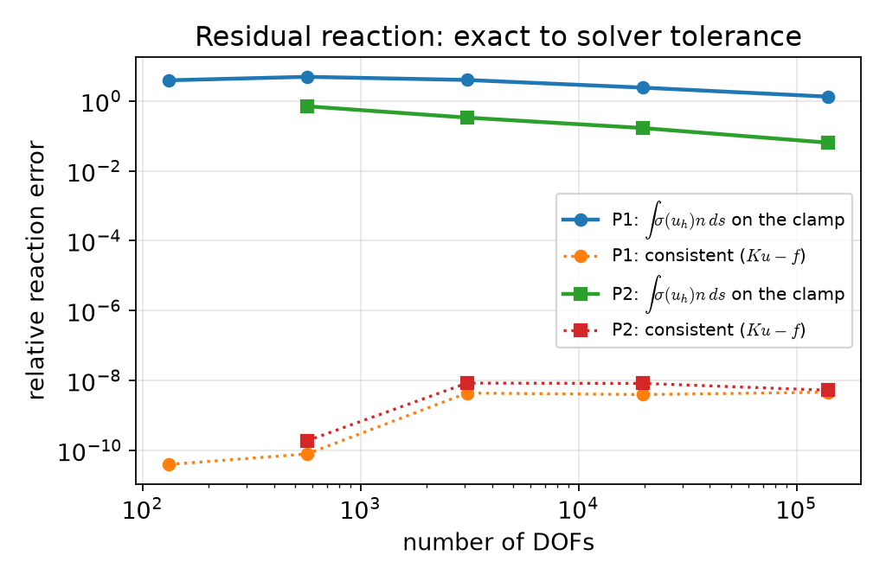
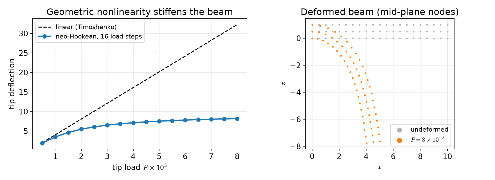

AI-based Materials and Process Simulation II
Week 01 — Course Introduction · Linear Elasticity · Algebraic Multigrid · Reaction Forces · Hyperelasticity
Process Systems Laboratory
Department of Chemical and Biomolecular Engineering, SeoulTech
Today
| Part | Topic | Time |
|---|---|---|
| 0 | Course II — what changes after Course I · schedule · project · LLMs for multi-file codes | 20 min |
| A | Theory — small-strain elasticity, weak form, Korn’s inequality, beam theory as a benchmark | 50 min |
| B | Implementation — vector spaces, locking, CG + algebraic multigrid, consistent reaction forces | 45 min |
| C | Hyperelasticity — finite strain, neo-Hookean energy, Newton, load stepping | 45 min |
| D | LLM workflow for larger codes · assignment | 20 min |
Lab notebook: W01_lab.ipynb · Assignment: W01_HW1.ipynb (due before Week 2)
Part 0 · Course II
From Course I to Course II
| Course I (done) | Course II (now) |
|---|---|
| scalar problems, Stokes, Navier–Stokes | vector-valued solid mechanics, then coupled heat and mass transfer |
| one PDE per notebook | coupled fields (thermoelasticity, damage, convection–reaction) |
| linear algebra: LU, CG, block preconditioners | multigrid for elasticity, SLEPc eigenproblems, staggered and monolithic Newton |
| verification: MMS, benchmarks | the same — plus conservation and equilibrium checks (reactions, energy) |
The rules from Course I stay: weak form first, predicted rates, a benchmark with a citation, -np 1 = -np 2, an AI-usage log.
Schedule at a glance
| Weeks | Block | Typical benchmark |
|---|---|---|
| 1–3 | elasticity, plane stress, axisymmetry, thermoelasticity | beam theory, Lamé cylinder |
| 4–5 | plasticity, viscoelasticity, phase-field fracture | limit load, relaxation |
| 6–7 | dynamics, buckling, beams | energy conservation, Euler load |
| 8 | midterm (first half) · plates · project proposal | thin-plate limit |
| 9–10 | shells, homogenization, cohesive interfaces | Mori–Tanaka, debonding |
| 11–14 | natural convection, reactive flow, porous media + conjugate heat transfer, phase separation and scaling | de Vahl Davis, Graetz |
| 15–16 | project workshop + progress talk · final presentations | — |
Grading as in Course I, except the project: proposal 5 · progress presentation 5 (Week 15) · report and code 20 · final presentation 10.
Codes get longer
A Course II project is a few hundred lines: material model, kinematics, solver loop, post-processing. One notebook cell does not scale. The pattern used in all reference notebooks of this course:
Part D: how to make an LLM produce such a module and the tests that check it.
Part A · Small-strain elasticity
Kinematics, stress, equilibrium
Displacement \mathbf u:\Omega\subset\mathbb R^3\to\mathbb R^3, small strain and isotropic Hooke’s law \boldsymbol\varepsilon(\mathbf u)=\tfrac12\big(\nabla\mathbf u+\nabla\mathbf u^\top\big),\qquad \boldsymbol\sigma=2\mu\,\boldsymbol\varepsilon+\lambda\,(\operatorname{tr}\boldsymbol\varepsilon)\,\mathbf I,\qquad \mu=\frac{E}{2(1+\nu)},\ \ \lambda=\frac{E\nu}{(1+\nu)(1-2\nu)} .
Boundary value problem
-\nabla\cdot\boldsymbol\sigma(\mathbf u)=\mathbf f in \Omega, \ \mathbf u=\mathbf 0 on \Gamma_D (clamp), \ \boldsymbol\sigma\mathbf n=\mathbf t on \Gamma_N (traction).
Plane strain: \varepsilon_{zz}=0, same formulas in 2D. Plane stress (\sigma_{zz}=0, Week 2) replaces \lambda by \lambda^*=2\lambda\mu/(\lambda+2\mu).
Weak form = principle of virtual work
Multiply by \mathbf v with \mathbf v=\mathbf 0 on \Gamma_D, integrate by parts, use the symmetry of \boldsymbol\sigma: a(\mathbf u,\mathbf v)=\int_\Omega\boldsymbol\sigma(\mathbf u):\boldsymbol\varepsilon(\mathbf v)\,dx =\int_\Omega\mathbf f\cdot\mathbf v\,dx+\int_{\Gamma_N}\mathbf t\cdot\mathbf v\,ds=\ell(\mathbf v)\qquad\forall\mathbf v\in V .
- a is symmetric; \tfrac12a(\mathbf v,\mathbf v)-\ell(\mathbf v) is the potential energy: the solution minimises it (Course I Week 5, Ritz).
- \boldsymbol\sigma:\boldsymbol\varepsilon(\mathbf v)=\boldsymbol\sigma:\nabla\mathbf v because \boldsymbol\sigma is symmetric — the code may use either.
Coercivity needs Korn’s inequality
a(\mathbf v,\mathbf v)=\int 2\mu|\boldsymbol\varepsilon(\mathbf v)|^2+\lambda(\nabla\cdot\mathbf v)^2\ \ge 2\mu\|\boldsymbol\varepsilon(\mathbf v)\|^2 controls only the symmetric gradient.
Korn’s inequality
If |\Gamma_D|>0: \ \|\nabla\mathbf v\|_{L^2}\le C_K\|\boldsymbol\varepsilon(\mathbf v)\|_{L^2} for all \mathbf v\in H^1_D(\Omega)^3. With Poincaré, a is coercive on V → Lax–Milgram.
The kernel of \boldsymbol\varepsilon is the rigid-body motions \mathbf r(\mathbf x)=\mathbf a+\boldsymbol\omega\times\mathbf x (6 in 3D, 3 in 2D). Without a clamp they are not excluded: the pure-traction problem needs \ell(\mathbf r)=0 (balance of forces and moments) — the vector version of the Neumann compatibility condition from Course I Week 6.
Two limits where the constant blows up
| Limit | What happens | Symptom |
|---|---|---|
| \nu\to\tfrac12 (\lambda\to\infty) | the term \lambda(\nabla\cdot\mathbf u)^2 enforces incompressibility | volumetric locking of P1 (mixed \mathbf u–p, Week 3 onwards) |
| slender structures in bending | P1 tetrahedra cannot bend without spurious shear strain | shear locking: far too stiff |
Locking means the error constant is huge, not that the method fails to converge — it converges, but only on very fine meshes.
A benchmark: the cantilever
Beam L\times B\times H=10\times1\times1, clamped at x=0, total shear load P on x=L, E=1, \nu=0.3.
\delta_{\rm EB}=\frac{PL^3}{3EI},\qquad \delta_{\rm T}=\delta_{\rm EB}+\frac{PL}{\kappa\,\mu A},\qquad I=\frac{BH^3}{12},\quad \kappa=\frac{10(1+\nu)}{12+11\nu}\ \text{(Cowper)}
\delta_{\rm T}/\delta_{\rm EB}=1.00765 here. The 3D solid is not a beam: the clamp also suppresses the Poisson contraction, so a converged 3D solution sits slightly below \delta_{\rm T}. Beam theory is a reference with a known modelling error — report the deviation, do not hide it.
Part B · Implementation and solvers
Math → code
| Mathematics | DOLFINx 0.11 |
|---|---|
| V_h\subset H^1(\Omega)^3, P2 | fem.functionspace(msh, ("Lagrange", 2, (3,))) |
| \boldsymbol\varepsilon(\mathbf u) | ufl.sym(ufl.grad(u)) |
| \boldsymbol\sigma(\mathbf u) | 2*mu*eps(u) + lmbda*ufl.tr(eps(u))*ufl.Identity(3) |
| a(\mathbf u,\mathbf v) | ufl.inner(sigma(u), eps(v))*ufl.dx |
| \int_{\Gamma_N}\mathbf t\cdot\mathbf v | ufl.dot(t, v)*ds(2), t = fem.Constant(msh, np.array([0, 0, -P/A])) |
| \mathbf u=\mathbf 0 on \Gamma_D | fem.dirichletbc(np.zeros(3), dofs, V) |
| one component, e.g. u_x=0 | fem.dirichletbc(0.0, fem.locate_dofs_topological(V.sub(0), fdim, facets), V.sub(0)) |
Tip deflection: average of u_z over the loaded face, assemble_scalar(form(u[2]*ds(2)))/A and allreduce.
Result: P1 locks, P2 does not

P1: 0.219 → 0.504 → 0.787 → 0.930 → 0.976 of \delta_{\rm T} (132 to 139 587 DOFs). P2: 0.976 at 567 DOFs, then 0.989, 0.992, 0.993. Same number of DOFs (3 075): P1 0.787, P2 0.989.
Solving large elasticity systems
3D, P2, a few 10^5 DOFs: LU (MUMPS) becomes slow and memory hungry. K is symmetric positive definite → CG. Preconditioner: algebraic multigrid (pc_type gamg, PETSc’s smoothed aggregation).
Multigrid works when the coarse levels can represent the low-energy modes of the operator. For elasticity those are the rigid-body motions — they have zero energy without the clamp. A scalar AMG does not know them; we tell it:
Near-nullspace: measured

P1, -np 2, relative tolerance 10^{-10}: 22, 23, 28, 30 iterations with the rigid-body modes; 59, 89, 112, 128 without (567 → 139 587 DOFs).
Reaction forces: two ways
The clamp exerts a force on the beam. Equilibrium: it must equal the applied load P.
Flux: \displaystyle R=\int_{\Gamma_D}\boldsymbol\sigma(\mathbf u_h)\mathbf n\,ds — differentiates \mathbf u_h and samples it where the stress is singular (re-entrant edges of the clamp).
Consistent: \mathbf r=K\mathbf u_h-\mathbf f with K assembled without boundary conditions; \mathbf r is non-zero only on the clamped DOFs; R=\sum_{\rm clamp}r_z.
Why the consistent value is exact: the discrete equations of all free DOFs hold, so the sum of all rows of K\mathbf u_h-\mathbf f over the clamped DOFs equals the discrete load balance — it is the discrete equilibrium itself.
Reaction forces: measured

Flux integral with P2: relative error 0.70 → 0.33 → 0.17 → 0.064; with P1 130–490 % (it even grows before it falls). Consistent: 10^{-8}–10^{-10}, the CG tolerance.
Part C · Hyperelasticity
Finite strain
Deformation \boldsymbol\varphi(\mathbf X)=\mathbf X+\mathbf u(\mathbf X), \mathbf F=\mathbf I+\nabla\mathbf u,\qquad \mathbf C=\mathbf F^\top\mathbf F,\qquad J=\det\mathbf F>0 .
Compressible neo-Hookean stored energy (reduces to Hooke’s law with \mu,\lambda for small strain): \psi(\mathbf F)=\frac\mu2\big(\operatorname{tr}\mathbf C-3\big)-\mu\ln J+\frac\lambda2(\ln J)^2,\qquad \Pi(\mathbf u)=\int_\Omega\psi(\mathbf F)\,dx-\int_{\Gamma_N}\mathbf t\cdot\mathbf u\,ds .
Equilibrium = stationarity: \ R(\mathbf u;\mathbf v)=D\Pi(\mathbf u)[\mathbf v]=0 for all \mathbf v — nonlinear in \mathbf u (Course I Weeks 8–9).
Energy → residual → Jacobian in UFL
u = fem.Function(V); v = ufl.TestFunction(V)
F = ufl.Identity(3) + ufl.grad(u); C = F.T * F; J = ufl.det(F)
psi = mu / 2 * (ufl.tr(C) - 3) - mu * ufl.ln(J) + lmbda / 2 * ufl.ln(J) ** 2
t = fem.Constant(msh, np.zeros(3))
R = ufl.derivative(psi * ufl.dx - ufl.dot(t, u) * ds(2), u, v) # Gateaux derivative
problem = NonlinearProblem(R, u, bcs=[bc], petsc_options_prefix="hyper_",
petsc_options={"snes_type": "newtonls", "snes_rtol": 1e-10, ...})The Jacobian D^2\Pi is generated by ufl.derivative inside NonlinearProblem. Dead load: \mathbf t does not follow the deformation.
Why load steps?
Newton from \mathbf u=\mathbf 0: the first update solves D^2\Pi(\mathbf 0)\,\delta\mathbf u=-R(\mathbf 0) — that is the linear elasticity problem.
- P=4\times10^{-3} in one step: the linear tip deflection would be 16 (the beam is 10 long). The update inverts elements, J\le0, \ln J = NaN: SNES stops after 1 iteration with reason −4 (
DIVERGED_FUNCTION_NANORINF). - 16 load steps up to P=8\times10^{-3}: 6, 9, 8, 7, 6, 6, 5, 5, 5, 5, 4, 4, 4, 4, 4, 4 Newton iterations per step.
Each step starts from the previous solution — continuation in the load (Course I Week 9).
The line search matters
Same beam (P2, 20\times2\times2), 8 load steps to P=4\times10^{-3}, -np 2. Newton iterations per step:
snes_linesearch_type |
iterations per load step | result |
|---|---|---|
bt (the default of newtonls) |
30 in the first step — stop | fails (reason −5, maximum iterations) |
l2 |
20, 17, 15, 13, 12, 11, 11, 11 | converges |
cp |
23, 19, 14, 10, 8, 7, 6, 5 | converges |
none / basic (full Newton steps) |
6, 9, 8, 7, 6, 6, 5, 5 | converges |
With load steps small enough, the full Newton step is the best choice here; backtracking on \|R\| keeps cutting the step. Always print the iterations and the converged reason — a failed solve is not an error in DOLFINx, u is simply not the solution.
Load–deflection

At P=8\times10^{-3}: tip deflection 8.18 (linear theory 32.2); the tip moves back by 5.48 in x. Small-load check: at P=10^{-6} the neo-Hookean tip deflection is 0.98904 of \delta_{\rm T} — identical to the linear P2 solution on the same mesh.
Part D · LLM workflow for larger codes · assignment
Prompting for a module, not a cell
- Specification first: equations, boundary conditions, parameters with units, the quantities to report, DOLFINx 0.11, the API sheet.
- Interfaces: “write
model.pywithmake_mesh(n),solve_linear(n, deg),reaction(uh)… each returns numbers, no plots”. - Tests as part of the request: “and a cell that checks (i) the small-load limit against linear elasticity, (ii) R=P, (iii)
-np 1=-np 2”. - Review the diff, not the whole file, when you ask for a change.
What LLMs typically get wrong in elasticity codes
- Legacy API:
VectorFunctionSpace,fem.FunctionSpace(msh, ...),dolfinx.nls.petsc.NewtonSolver,uh.vector— see the API sheet §14. - Plane stress vs plane strain: the same
lmbdaused for both (Week 2). - CG + GAMG without the near-nullspace: it converges, just slowly — you only notice if you print the iteration count.
- Reactions from
σ(u_h)nintegrated over the clamp, reported as if exact. - A “verification” against Euler–Bernoulli that silently compares with the wrong beam theory or the wrong I.
Check each one with a number, not by reading.
Assignment HW1 (due before Week 2)
| Q | Topic | Points |
|---|---|---|
| 1 | Rigid-body motions, Korn, compatibility of the pure-traction problem | 20 |
| 2 | Cantilever: P1 vs P2 vs slenderness, CG + GAMG with and without the near-nullspace | 40 |
| 3 | Reactions: force and moment equilibrium from the residual, flux comparison | 20 |
| 4 | Debugging an LLM-generated hyperelastic load-stepping script | 20 |
Week 2 starts with a 10-minute quiz on today’s material (closed-AI).
Summary
| Concept | Key point | DOLFINx 0.11 |
|---|---|---|
| Weak form | virtual work, symmetric, energy minimum | inner(sigma(u), eps(v))*dx |
| Coercivity | Korn: needs a clamp (or \ell(\mathbf r)=0) | dirichletbc(np.zeros(3), dofs, V) |
| Locking | P1 too stiff in bending; P2 fine | ("Lagrange", 2, (3,)) |
| AMG | supply the rigid-body near-nullspace | A.setNearNullSpace(...), pc_type gamg |
| Reactions | K\mathbf u_h-\mathbf f on the clamped DOFs | assemble without bcs |
| Hyperelasticity | energy → derivative → Newton, load steps |
NonlinearProblem, fem.Constant load |
Next week: plane stress with an orthotropic material, axisymmetry (r-weighted forms), Gmsh geometries, the Lamé cylinder.